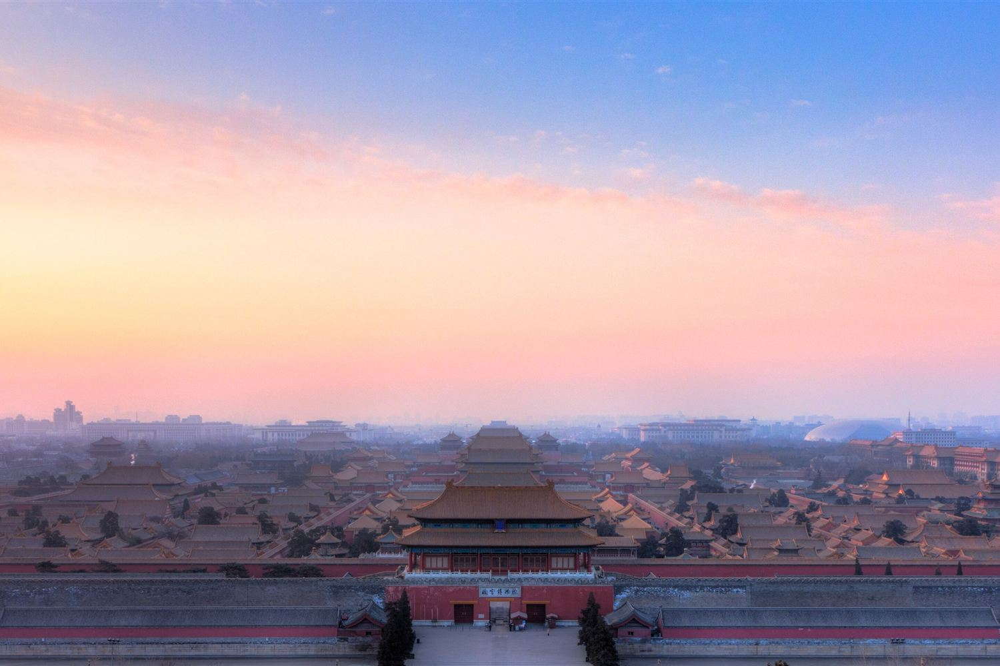

Tappa 1 di 6 · 3 notti
Sabato 31 ottobre — martedì 3 novembre · arrivo alle 17:40, partenza in treno nel pomeriggio

Tre notti, ma solo due giornate piene: il primo giorno arrivi la sera e l'ultimo parte il treno.
Atterraggio alle 17:40, e il sole è già andato giù alle 17:14. Dall'aeroporto l'Airport Express arriva a Dongzhimen in circa mezz'ora, poi metro.
La giornata da non sbagliare, con un tour guidato in inglese già prenotato. Ritrovo alle 07:50 alla Laoshe Tea House di Qianmen: metro linea 2 fino a Hepingmen, uscita C2, poi 750 metri a piedi verso est. Lo staff aspetta con una bandiera rosa. I biglietti li compra l'agenzia.
Mutianyu, con un tour di gruppo in bus già prenotato: biglietto, navetta nel parco e pranzo inclusi. Ritrovo alle 07:50 all'uscita C della stazione Zhangzizhonglu, metro linea 5. Il tour dura circa nove ore e torna allo stesso punto.
Sul crinale il vento non si ferma mai e non c'è niente che lo blocchi. È il giorno in cui il guscio antivento serve davvero.
Il treno per Xi'an parte nel pomeriggio, quindi resta una mattina intera e non di più.
Cose che le guide standard non mettono. Quelle senza avviso in rosso sono verificate; le altre hanno un ostacolo o sono ancora da controllare.
Il Guanxiangtai, a Jianguomen: una torre delle mura Ming con sopra gli strumenti astronomici in bronzo costruiti dai gesuiti per la corte Qing — sfere armillari e quadranti giganti, immobili tra i grattacieli. Quaranta minuti, in centro, e quasi vuoto. L'unico posto dove starebbe è la mattina di martedì, che però è già del Tempio del Cielo e di Panjiayuan: entra solo se una delle due salta.
Ad aprile 2026 Unitree ha aperto il suo primo negozio diretto in Cina, in un centro commerciale sulla via pedonale di Wangfujing. Vende il robot umanoide G1 e il cane robot GO2, e i visitatori li comandano di persona con i radiocomandi, assistiti dal personale. Si entra e basta, senza prenotare — e Wangfujing è già nel programma della sera del 31.
Robot Mall di Yizhuang — con attrito. È il primo negozio «4S» al mondo per robot umanoidi: oltre cento modelli di più di quaranta produttori, lo smistamento pacchi, una band di robot. È anche sito ufficiale di turismo industriale, con visita su prenotazione. Gli ostacoli sono due: sta a quaranta minuti dal centro, e si prenota da una mini-app WeChat (亦庄机器人) che chiede un documento cinese. Tienilo come un forse, non come un piano.
Città Proibita e Muraglia sono nei tour già prenotati: i biglietti li compra l'agenzia.
La Città Proibita resta il collo di bottiglia, anche col tour. I biglietti si vendono solo online, a nome e col passaporto, sette giorni prima, e finiscono in poche ore. Domenica 1 novembre è un giorno di fine settimana, cioè di massima affluenza. Li compra l'agenzia: se non li trova ti rimborsa tutto, ma la visita salta.
Se la prenotazione di domenica va male, il piano si rompe. Lunedì il palazzo è chiuso, martedì mattina c'è il Tempio del Cielo e poi il treno. Non esiste un secondo tentativo dentro questa tappa: o domenica, o si rinuncia. Vale la pena avere un piano B già in testa — la Città Proibita si vede anche solo dall'alto di Jingshan, e il Tempio del Cielo o il Tempio dei Lama riempiono una mattina.
| Luogo | Quando | Da sapere |
|---|---|---|
| Città Proibita | chiusa il lunedì | Nel tour di domenica, biglietti comprati dall'agenzia. Serve il passaporto. Ingresso a sud, uscita a nord. |
| Piazza Tiananmen | tutti i giorni | Nel tour di domenica. Si passano i controlli col passaporto. Può chiudere senza preavviso, e allora il tour la salta. |
| Grande Muraglia | tutti i giorni | Mutianyu, nel tour di lunedì. Il passaporto fa da biglietto. Funivia a parte, 140 RMB a persona. |
| Tempio del Cielo | parco all'alba | Il parco apre prima dei padiglioni. Biglietto combinato o solo parco. |
| Parco di Jingshan | tutti i giorni | Biglietto simbolico. È davanti all'uscita nord della Città Proibita. |
Gli orari e i prezzi dei musei cinesi cambiano tra stagioni e di anno in anno: qui c'è la forma della giornata, i numeri esatti vanno confermati quando prenoti.
Panjiayuan, il mercato dell'antiquariato, è nel piano di martedì e martedì è il giorno sbagliato. Il mercato vivo è quello del fine settimana; in settimana resta una frazione delle bancarelle. Se ci tieni, l'unico slot buono in questa tappa è domenica — ma domenica è già il giorno della Città Proibita. Più sensato lasciarlo perdere e prendersi il Tempio del Cielo con calma.
| Giorno | Alba | Tramonto | Luce |
|---|---|---|---|
| Sab 31 ott | 06:41 | 17:14 | 10h 33m |
| Dom 1 nov | 06:42 | 17:13 | 10h 31m |
| Lun 2 nov | 06:43 | 17:12 | 10h 29m |
| Mar 3 nov | 06:44 | 17:11 | 10h 27m |
Medie di novembre: 3–14°, aria secca e vento. La sensazione all'alba e sul crinale della Muraglia è parecchio più bassa del numero.
Il buio arriva poco dopo le cinque: qui non ci sono pomeriggi lunghi da riempire, si comincia presto.
Capillare, economica, con i cartelli anche in caratteri latini. Si paga col QR di Alipay senza comprare biglietti. Le linee 1 e 2 coprono Tiananmen e il centro storico.
Si chiamano dall'app dentro Alipay. I tassisti non parlano inglese e non leggono l'alfabeto latino: l'indirizzo dell'hotel serve in caratteri cinesi, salvato come immagine sul telefono.
Airport Express fino a Dongzhimen, circa mezz'ora, poi cambio in metro. Col volo che arriva alle 17:40 e i tempi di frontiera, in hotel si è verso le 19:30–20:00.
La cucina di Pechino è di grano e non di riso: pasta, focacce, ravioli. E l'anatra.
Il piatto della città. Arriva tagliata al tavolo e si costruisce da sé: cialda sottile, una fetta di pelle croccante, cipollotto, cetriolo, salsa di soia dolce. Un'anatra intera è da due o tre persone.
Le insegne storiche sono le più turistiche. Le trattorie di quartiere fanno la stessa anatra con la metà della coreografia.
Una crêpe salata fatta sulla piastra di un carretto: uovo, salsa, erbe, una sfoglia croccante dentro, piegata in quattro. Si mangia camminando e costa pochissimo. La colazione giusta prima della Muraglia.
Tagliatelle spesse con un ragù scuro di maiale e pasta di soia, e verdure crude a fianco da mescolare. Piatto di casa, saziante, niente affatto piccante.
Versione del nord, di origine mongola: brodo chiaro, fette sottilissime di agnello che cuociono in pochi secondi, salsa di sesamo per intingere. Non c'entra nulla con l'hotpot piccante di Chengdu, e con tre gradi la sera è esattamente la cosa giusta.
Bolliti o alla piastra, ripieni di maiale e verza o di gambero. Cena da primo giorno: si ordinano a peso o a vassoio e arrivano subito.
Spiedini di piccole mele selvatiche immerse nello zucchero fuso, che diventa un vetro sottile. Si vendono per strada e sono il dolce d'inverno.
Baodu, trippa bollita servita con salsa di sesamo, è un classico da colazione locale. Douzhi è una bevanda di fagiolo mungo fermentato che divide anche i pechinesi: acida, densa, difficilissima al primo sorso. Provale dove le mangia la gente del posto, non dove le mettono nel menù in inglese.
Questa nota resta solo su questo dispositivo. Vive nella memoria di questo browser, non passa da nessun server e non la ritrovi da un altro telefono. Se cancelli i dati del browser, non c'è più.